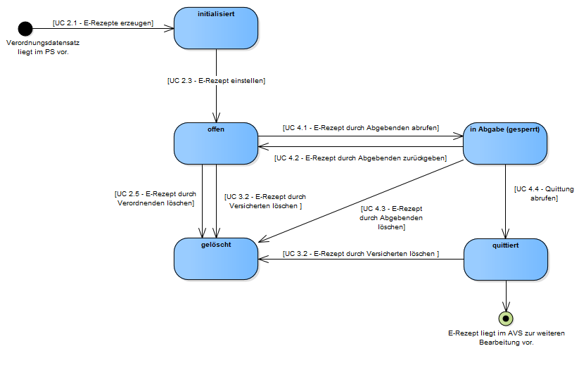

Seiteninhalt:
Die Unterstützung des Einlösens von E-Rezepten im europäischen Ausland setzt auf die bestehende Infrastruktur der Anwendung E-Rezept auf.
Die Kommunikation mit den abgebenden Leistungserbringern im europäischen Ausland (LE-EU) wird durch den National Contact Point eHealth in Deutschland (NCPeH-Fachdienst (Deutschland), NCPeH-FD) gebündelt. Der NCPeH-FD verbindet die TI mit der eHDSI. Der NCPeH-FD ist ein neues Client System des TI-Flow-Fachdienstes.
Der Versicherte nutzt für die Verwaltung von Einwilligung und Zugriffsberechtigung ein E-Rezept-FdV, welches direkt mit dem TI-Flow-Fachdienst kommuniziert.

Für die Übermittlung von ärztlichen und zahnärztlichen Verordnungen für apothekenpflichtige Arzneimittel in Deutschland wird das folgende Statusmodell umgesetzt.

Für die im Rahmen des Einlösens im europäischen Ausland vorgegebenen Prozessschritten lässt sich das Statusmodell nicht vollständig anwenden, da kein Prozessschritt vorgesehen ist, ein zur Abgabe vorgesehenes E-Rezept an den Versicherten zurückzugeben, wenn die Abgabe nicht erfolgen kann.
| Anwendungsfall ePrescription/eDispensation | Anwendungsfall E-Rezept | Status vor Operation | Status nach Operation |
|---|---|---|---|
| Identifizierung des Versicherten im Abgabeland | UC Demographische Daten eines Versicherten abrufen | ready | ready |
| Auflistung von E-Rezepten des Versicherten | UC Liste der einlösbaren E-Rezepte eines Versicherten abrufen | ready | ready |
| Abruf der abzugebenden E-Rezepte als Original | UC Liste ausgewählter E-Rezepte eines Versicherten abrufen | ready | in-progress |
| Abgabe von Arzneimitteln im Abgabeland | UC Abgabe von E-Rezepten im europäischen Ausland | in-progress | completed |
Sobald ein E-Rezept durch eine LE-EU mit dem Anwendungsfall “Abruf der abzugebenden E-Rezepten des Versicherten” abgerufen wurde, kann es nicht mehr erneut abgerufen werden oder in einer anderen Apotheke eingelöst werden.
Einen Zugriffsberechtigung eines Versicherten für das Einlösen von E-Rezepten im europäischen Ausland beinhaltet die folgenden Informationen:
Um zu bestimmen, welche europäischen Länder das die Anwendung ePrescription/eDispensation Szenario Land A unterstützen, lädt der TI-Flow-Fachdienst die Liste dieser Länder aus dem FHIR-VZD. Die Liste kann für 96h gecacht werden.
Der Ablauf der Authentisierung und Suche ist in [gemSpec_VZD_FHIR_Directory]#AF_10403 Fachdienst sucht Einträge im FHIR-Directory beschrieben. Der Betreiber des TI-Flow-Fachdienst muss beim FHIR-VZD Anbieter für den Zugriff auf den FHIR-VZD nach [gemSpec_VZD_FHIR_Directory]#Nutzer und Rollen registrieren.